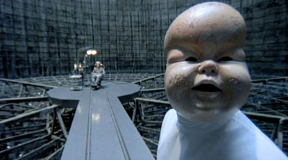

Brazil (1985)

Brazil evokes the melancholy, dreamlike quality of its theme song, an English translation of a 1939 Brazilian song, "Aquarela do Brasil," featured in Disney's Saludos Amigos (1942). In that escapist film, Brazil is represented as a romantic, fantasy location that is the opposite of gloomy, northern countries. Gilliam was inspired by this song to create the fictional totalitarian government and the overall dystopian mood of the film.
The film centers on Sam Lowry, a young man trying to find a woman who appears in his dreams while he is working in a mind-numbing job and living a life in a small apartment, set in a dystopian world in which there is an over-reliance on poorly maintained (and rather whimsical) machines. Brazil's bureaucratic, totalitarian government is reminiscent of the British government depicted in George Orwell's Nineteen Eighty-Four, except that it has a buffoonish, slap-stick quality totally lacking in that particular novel.
Jack Mathews, movie critic and author of The Battle of Brazil (1987), characterized the film as "satirizing the bureaucratic, largely dysfunctional industrial world that had been driving [Gilliam] crazy all his life." While the film was a flop upon its initial release, it has since become a cult classic.
Cast (in credits order)
- Jonathan Pryce -- Sam Lowry
- Robert De Niro -- Archibald 'Harry' Tuttle
- Katherine Helmond -- Mrs. Ida Lowry
- Ian Holm -- Mr. M. Kurtzmann
- Bob Hoskins -- Spoor
- Michael Palin -- Jack Lint
- Ian Richardson -- Mr. Warrenn
- Peter Vaughan -- Mr. Helpmann
- Kim Greist -- Jill Layton
- Jim Broadbent -- Dr. Jaffe
- Barbara Hicks -- Mrs. Alma Terrain
- Charles McKeown -- Harvey Lime
- Derrick O'Connor -- Dowser
- Kathryn Pogson -- Shirley
- Bryan Pringle -- Spiro
- Sheila Reid -- Mrs. Buttle
- John Flanagan -- T.V. Interviewer / Salesman
- Ray Cooper -- Technician
- Brian Miller -- Mr. Buttle
- Simon Nash -- Boy Buttle
- Prudence Oliver -- Girl Buttle
- Simon Jones -- Arrest Official
- Derek Deadman -- Bill--Dept. of Works
- Nigel Planer -- Charlie--Dept. of Works
- Terence Bayler -- T.V Commercial Presente
- Gorden Kaye -- M.O.I. Lobby Porter
- Tony Portacio -- Neighbour in Clark's Pool
- Bill Wallis -- Bespectacled lurker
- Winston Dennis -- Samurai Warrior
- Jack Purvis -- Dr. Chapman
- Elizabeth Spender -- Alison / 'Barbara' Lint
- Anthony Brown -- Porter - Information Retrieval (as Antony Brown)
- Myrtle Devenish -- Typist in Jack's Office
- Holly Gilliam -- Holly
- John Pierce Jones -- Basement Guard
- Ann Way -- Old Lady with Dog
- Don Henderson -- First Black Maria Guard
- Howard Lew Lewis -- Second Black Maria Guard
- Oscar Quitak -- Interview Official
- Harold Innocent -- Interview Official
- John Grillo -- Interview Official
- Ralph Nossek -- Interview Official
- David Gant -- Interview Official
- James Coyle -- Interview Official
- Patrick Connor -- Cell Guard
- Roger Ashton-Griffiths -- Priest
- Russell Keith Grant -- Young Gallant at Funeral